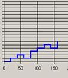
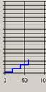

Vol. 11 No. 2, January 2006
| Vol. 11 No. 2, January 2006 | ||||
Introduction: The strategies that people use to browse Websites are difficult to analyse and understand: quantitative data can lack information about what a user actually intends to do, while qualitative data tends to be localised and is impractical to gather for large samples.
Method: This paper describes a novel approach that combines data from direct observation, user surveys and server logs to analyse users' browsing behaviour. It is based on a longitudinal study of university students' use of a Website related to one of their courses.
Analysis: The data were analysed by using Footstep graphs to categorise browsing behaviour into pre-defined strategies and comparing these with data from questionnaires and direct observation of the students' actual use of the site.
Results: Initial results indicated that in certain cases the patterns from server logs matched the observed browsing strategies as described in the literature. In addition, by cross-referencing the quantitative and qualitative data, a number of insights were gained into potential problems.
Conclusion: This study shows how combining quantitative and qualitative approaches can provide an insight into changes in user browsing behaviour over time. It also identifies some potential methodological problems in studies of browsing behaviour and indicates some directions for future research.
The path a user takes when navigating through a system often reflects the user's mental model of the system, so it is no surprise that Websites that more closely reflect the user's mental model make for a more successful user experience (Nielsen, 2000). This puts identification of likely user navigational paths as a key factor in construction of the scenarios used in Website interaction design (Cooper, 1999; Preece et al., 2002) and in the evaluation of existing designs.
However, these navigational paths are prone to change. Once a Website is made public, the user is in ultimate control of their own navigation, often employing a variety of different strategies for browsing (Graff, 2005). These strategies also vary over time depending, not only on the user's goals, but also on factors such as expertise, familiarity with the site, time pressures and perceived cost of information (Pirolli & Card, 1999; Catledge & Pitkow, 1995). In addition, site design and structure can influence strategies through presentation of short/long navigation sequences or the visibility of options (Holsanova, 2004). Finally, information gathered from a site can also alter browsing strategies by presenting new ideas or directions (Bates, 1989). Given this continually shifting nature of browsing strategies, the question arises how can these strategies be identified in the use made of an existing Website.
One solution is to use the clickstream logs, which contain the address of each page visited, the date and time of the visit and the referring page and are a potentially rich source of data on Internet user activity. Clickstream logs can be generated either by software hosted by the client application or directly from the server logs. Server-side data has certain advantages over client-side data in that large volumes of data can be gathered for all users of the site without the need to install software on the client side. However, these logs cannot tell the full story of a user's interaction with the site. User activity, such as use of a browser Back button, cannot be captured by server-based logs nor can clickstream logs in general provide information on a user's intentions or what other activities they were engaged in during their use of the Website.
An alternative solution is offered through the analysis of ethnographic data gathered directly from the observation and questioning of users. Ethnographic data can provide valuable information on both a user's motivation and environment that is not available by other means. However, this approach is also not without its drawbacks. Ethnographic studies are time-consuming and, because of the time and effort involved in data collection, data can usually only be obtained from a relatively small number of users at a time. Finally, the data from this form of study are also open to the criticism of researcher bias and subjectivity.
One possible solution to these problems is to bring together both qualitative-ethnographic and quantitative-clickstream methodologies in one study. This technique should provide, at least potentially, an approach that overcomes the shortcomings of either qualitative-ethnographic or quantitative-clickstream techniques when taken alone: this paper describes an attempt to implement such a study
This study attempted to analyse the browsing behaviour of a group of undergraduate university students using a particular Website as a resource for one of their taught courses. It was performed by an interdisciplinary team of researchers from the Management and Information Systems, HCI and Artificial Intelligence groups in the University of York. It illustrates how such a combined approach can contribute to a fuller understanding of user behaviour and the extent to which such behaviour changes over time; it also highlights a number of potential problems and issues that need to be addressed in any future attempts this type of interdisciplinary research.
To assess the effectiveness of a combined qualitative-quantitative approach, a study was carried out of the behaviour of first-year university students accessing an informational Website over the duration of one nine-week module. A method for categorising browsing patterns was selected, then server-side data on the pages visited within the site were gathered and categorised into patterns. These were in turn compared with data gathered from surveys on participants' attitudes and habits combined with data from interviews and direct observation of the participants made during the study.
The identification of browsing strategies consists of identifying the routes users take when they move through a site and categorising these into patterns that aim to reflect common user strategies. One example of this approach was developed by Canter et al., (1985) who initially identified four basic routes that users take through hypertext
These were then combined into patterns that could describe potential underlying browsing strategies (Table 1).
| Strategy | Probable User Goal | Pattern - Routes Used |
|---|---|---|
| Scanning | Cover large area without depth | Mix of deep spikes and short loops |
| Browsing | Follow wherever site goes until item of interest is encountered | Many long loops, some large rings |
| Searching | Look for specific item in site | Ever-increasing spikes plus some loops |
| Exploring | Examine extent and nature of site | Mix of many different patterns |
| Wandering | Amble through site in unstructured manner | Many medium-sized rings |
According to Mullier et al., (2002) this leads to the expectation that if these patterns could be observed and recorded they could be used to illustrate a user's browsing strategy changes over time. For example, user behaviour in an informational Website should initially show a large number of Exploring and Wandering patterns as users learn about both the information and the Website structure. This should eventually settle down into Browsing and Searching patterns as users become familiar with the site and concentrate on accomplishing specific tasks.
Ideally, this type of analysis would consist of categorising basic browsing strategies in terms of the patterns of paths or routes that correspond to each strategy, gathering data on the actual pages visited by users of the Website, and then comparing these paths with those that would be expected if a particular browsing strategy was being followed.
A common tool for collecting data on the pages visited by Website users is the use of server-side clickstream data. This identifies the pages delivered by a server in response to a client's request. However, these clickstream data logs are often large and unwieldy and present an incomplete picture of activity. For example, server-side logs do not record activities that involve browser caching (such as the use of the 'Back' button), network caching (such as requests for pages held in an intermediate server's cache), or the navigation of pages that are integral to the site but are held on another server (Kohavi, 2001).
Despite these server-side limitations, there are some aspects of user behaviour, such as use of the back button or the opening of new/additional windows within the same Website, that can be captured by such techniques such as the Pattern Restore Method (PRM) algorithm (Ting et al. 2005). The PRM algorithm attempts to reconstruct missing server-side clickstream data based on referring site information (where the user came from) and the Website's link structure. By applying the PRM algorithm during the data pre-processing step of Web usage mining, it is estimated that, depending on Website structure, up to 80% or 90% of data lost due to use of the back button or caching can be restored. Although the PRM algorithm cannot capture such phenomena as navigation to external Websites, the reconstructed clickstream data does provide a more accurate reflection of the actual pages visited by the user. An example of PRM reconstruction where a user has opened multiple windows within the same website in a single session is shown in Figure 1 and Tables 2a and 2b.
|
|
Once the clickstream data have been processed, a technique for analysing and categorising these data into usage patterns is required. The visualisation techniques developed by Ting et al., (2004) facilitate this by producing 'Footstep' graphs. These are based on the use of a two-dimensional x-y plot, where the x-axis represents the browsing time between two Web pages and the y-axis the Web page in the users browsing route. Thus, the distance travelled on the x-axis represents the time the user has spent browsing and a change in the y-axis represents a transition from one Web page to another.
To produce Footstep Graphs, the Clickstream records for each user's session (Table 3a) are examined and a sequence number assigned to each unique page accessed (Table 3b). Then a series of tuples (a = (x-axis: starting time of node i, y-axis: sequence number of node i) and b = (x-axis: ending time of node i, y-axis: sequence number of node i) are generated to produce the Footstep Graph. For example, in Table 3b Tuple1 = (a = (0,0), b = (62,0)), Tuple2 = (a = (62,10), b = (124,10)), Tuple3 = (a = (124,0), b = (186,0)), … , Tuple8 = (a = (329,40), b = (349,40), Tuple9 = (a=(349,0)). (Note that in the last tuple of each user's browsing route, there is only data for 'a' because this is the last node in the user's browsing route.) The resulting Footstep Graph is shown in Figure 2.
|
|
The categories identified by Ting et al include a 'Stairs' pattern where the user moves forward through a Website with no repeat visits to a page (Figure 3a), a 'Fingers' pattern where the user directly visits a specific page and immediately returns to the starting page (Figure 3b), and a 'Mountain' pattern where a user moves through several pages in order to reach or return from a specific page (Figure 3c).
Canter's 'Path' route should manifest itself as a Stairs pattern, consequently the presence of Stairs patterns should be indicative of users exploring or wandering the site. Similarly, combinations of Canter's 'Spike' and 'Loop' routes, which are indicative of users searching a site for a specific target, should manifest themselves as Fingers or Mountains patterns (Table 4).
| Route | Footstep Graph Pattern |
|---|---|
| Path | Stairs (Fig 2a) |
| Loop | Mountain (Fig 2b) |
| Spike | Finger (Fig 2c) |
Finally, 'Complex' patterns, mixing 'Stairs', 'Fingers' and 'Mountains' in the same session, would be analogous to Canter's pattern for an Exploring strategy (Figure 4).
To test the validity of this mapping, the patterns identified from the Footstep graphs would need to be compared with observation of actual usage at various stages of the user's interaction to ensure that the patterns identified were both an accurate reflection of the user's activity and a valid representation of the user's strategy over time.
We examined the behaviour of eighty-six first year students who were taking a nine-week module on Management Information Systems at the University of York. There was no set text for the module but, rather, a hierarchically structured Website was developed and maintained by the lecturer concerned. This site consisted of an overview page describing the materials to be covered in each lecture with links to relevant topics, definitions and recommendations for further reading. Links within the site pointed to both other pages within the site as well as external pages. The lecturer would generally advise students each week on specific areas of the site to study.
Surveys were administered to students in Week 2 and in Week 8 of the module to assess levels of Internet expertise, surfing habits and the use of the module Website. Semi-structured interviews were held with six students at the start of the module and five of these students were then observed using the Website at the departmental HCI lab. Follow-up interviews and observation were held with two of these original students, at their own premises, in Week 8.
In parallel with this, server-side data were gathered weekly during the module. These data were then processed by Web-usage data pre-processing techniques such as data cleaning, data filtering, user identification, session identification, 'bot' detection and data formatting (Cooley et al., 1999) to ensure data was readable and reflected only student access to the site. Additionally, the PRM algorithm was used to restore any lost clickstream data (Figure 5).
Finally, Footstep graphs were produced for all sessions and categorised by week and patterns. If the mapping of patterns to user strategies described above was accurate, the Footstep graph analysis should initially show a large number of Stairs patterns as students learn about both the module and the Website. Eventually this should settle down into Finger and/or Mountain patterns as students become familiar with the site and more focused on accomplishing specific tasks (Mullier et al., 2002).
The data for the results were generated from three distinct sources: server logs from the module Website, written questionnaires and direct observation. 117,461 records from the server logs were cleaned in order to produce Footstep graphs for 476 user sessions; these were then classified into one of four pre-defined patterns. In addition, written surveys were administered to eighty-six students at two points during the module, producing seventy-four and sixty usable responses respectively. Finally, six students were interviewed and their use of the Website was observed under laboratory conditions. Later in the module, two students were observed in their own rooms using their own laptops. These results are described in detail below.
For the period December 10th 2004 to March 15th 2005, 117,461 requests were collected from the site server. These raw data were then filtered to remove unwanted data such as requests from search engines, bots and all other requests from outside the University (all of the students for this module were resident on campus and used the university network for Internet access). This eliminated approximately 94% of the original data leaving 7,425 records. These data were then cleaned to remove any remaining errors or sources of noise, resulting in a final data set of only 2,513 records (Table 5).
| Step | Data Records |
|---|---|
| Raw Clickstream Data | 117461 |
| Data Filtering | 7425 |
| Data Cleaning | 2513 |
Individual user sessions were then identified via a combination of the IP addresses, user agent data and referrer information for each record; time gaps of 30 minutes were used to demarcate the end of a session. This produced 476 user sessions. The PRM algorithm was then applied to the clickstream data, which restored an additional 740 records producing a total of 3,253 clickstream data records (Table 4).
| Step | Data Records | Number of Sessions |
|---|---|---|
| User /Session Identification | 2513 | 476 |
| After Pattern Restoration | 3253 | 476 |
Footstep graphs were then generated for all sessions. To facilitate manual pattern identification and sorting, these graphs were 'smoothed' by allocating a standard time to all pages in a session (Figure 6).
The time-smoothed Footstep graphs were then manually sorted by week and by whether they consisted of predominantly Stairs, Fingers, or Mountains patterns or, where there was no single pattern predominant, as Complex patterns. This sort was done manually by one of the authors and manually verified by another author.
| Week | Stairs | Fingers | Mountains | Complex | Total |
|---|---|---|---|---|---|
| 2 | 16 | 18 | 9 | 25 | 68 |
| 3 | 14 | 11 | 18 | 23 | 66 |
| 4 | 19 | 13 | 12 | 13 | 57 |
| 5 | 15 | 10 | 6 | 5 | 36 |
| 6 | 19 | 5 | 3 | 5 | 32 |
| 7 | 15 | 11 | 8 | 2 | 36 |
| 8 | 12 | 8 | 11 | 0 | 31 |
| 9 | 9 | 3 | 8 | 2 | 22 |
Of the eighty-six students registered for the module, seventy-four participated in the survey administered in Week 2, and fourteen chose not to participate further, leaving sixty to participate in the survey administered in Week 8. The results of these surveys are shown in Table 8.
|
|
||||||||||||||||||||||||||||||||||||||||||
The following participants, all first-year students, were interviewed and observed in the departmental HCI lab during week two. Except where noted, all participants were native English speakers.
'C' had been using the Internet since the age of 12, claiming he preferred it to textbooks for schoolwork because of the chunking and navigation inherent in hypertext. C said he often kept multiple applications open on his computer including Instant Messaging. He also listened to music, took meal breaks, and conversed with people while studying, but, overall, tended to multi-task less when studying in order to focus. He stated he had not visited the MIS site before the session. In the observation, he started with the main site page and then tried to visit each linked page in the order he encountered them, cutting and pasting items of interest into a blank Word document for later study or printing ('Just trying to find... questions, examples... just trying to get something out of it'.). He initially attempted to read each page as he encountered it, but as the session progressed and he realised the extent and complexity of the data, he switched to scanning pages instead, finally returning to the lecture Overview page and printing that page for future reference.
'D' had been a computer user since the age of 7. He said he tended to keep multiple applications open while working, including music, games and Instant Messaging. He will sometimes eat at his PC but will not use his phone while working. He stated a clear preference for hard copy study materials over Websites ('Sometimes I find that a well-laid-out book is better than a well-laid-out Web page... it's easier to find information'). He declined to be observed for this study.
'E' had been an Internet user since the age of 14 and described her IT knowledge as 'pretty good'. She said that she often kept several applications running at the same time on her computer such as Instant Messaging and multiple browser windows. E's other concurrent activities included listening to music and drinking (but not eating) while working on her computer. E stated she had not visited the MIS site before the session. In observation, E started with the site Overview page and then jumped to various links that either were of special interest to her or referred to topics that had been mentioned in the first lecture. There appeared to be no particular pattern to E's navigation; she would click links as she encountered them and as they caught her interest, using the browser Back button to return. E commented that she did not like to read screens for long periods so she would return to the site '...as mood grabs me'.
'K', who was not a native English speaker, had used computers since the age of 12, but only started using the Internet at the age of 17. He stated that he multi-tasked while studying, including eating at his computer, but tries to avoid using Instant Messaging or placing phone calls while working. He had not yet visited the MIS site. During the observation session, he did not have notes on the site URL and could not find the correct location, but instead stumbled across an older version of the site, which he briefly (and randomly) examined.
'L' had used computers since the age of 12, but had only started using the Internet at the age of 17. She, too, was not a native English speaker. She tended to keep various applications open and multi-tasked, but preferred not to talk to people while working. L preferred to do research on the Internet instead of books, but at the same time said she preferred to read large amounts of text on paper rather than on screen. She did have one brief look at the MIS site before the observation session. During the observation, she stated she had very fixed ideas about what she wanted to accomplish during the session, first going to the Books page to determine what books she would need to obtain, then to the Case Study page as she had 'no idea' what the module was about and assumed that page might have relevant information. As the Case Study page did not enlighten her, she then opened a second browser window to access the University library to see if the books listed on the site were available, and then returned to the original browser window to look at Basic Assumptions, Links and Definitions pages in order to further her basic understanding of module.
'S' was a 2nd generation IT user, as her father is a computer programmer. She said she tended to keep a few applications open on her computer, usually music and Instant Messaging, but preferred not to message, talk to visitors or eat at her computer while working. She said she had not been to the MIS site before. During the observation, S first went to the Introduction page mentioned by the lecturer and from there followed various links as she encountered them ('I tend to flick about until I find something... ') until she found the Overview page with a list of lectures. She then proceeded to sequentially read pages on lectures 1, 2, and 3 as recommended by lecturer.
In week eight of the module two of the participants, C and E, agreed to be observed again, this time in their rooms using their own laptops.
C continued to multi-task while working, keeping such applications as online radio, Instant Messaging, e-mail open but setting Instant Messaging to 'busy'. He stated he prefers to play music loudly while working, using headphones if neighbours were about. He generally keeps his door open, allowing people to pop in and out of his room to chat; however, he will close the door while studying if cooking is being done as his room is next to the kitchen. C started with the bookmarked main MIS page, but from there went directly to each of the three key topic pages mentioned in the previous week's lecture, in order of page presentation. Each of these key topic pages had a considerable number of links to external pages, which C examined, sometimes cutting and pasting into a Word document for later study or sometimes printing the external page directly. He used the browser back button to return to the MIS site and to return to pages already visited within the site. C says he often leaves his browser open at a page on the site while taking a break during study.
E also continued to multi-task while working, including Instant Messaging and e-mail, and would sometimes stop to check and read messages during study if notified by her mail application. She said she would take breaks and stop to talk to people while doing coursework, welcoming the diversions as she finds reading text on a screen tiring. When taking these breaks, E said she would leave her browser open on the last page visited as a reminder of where she left off. E also listens to music on her PC, but prefers it at a softer volume when studying. During the observation, she started with the bookmarked main MIS page, and then went directly to a page the lecturer advised had been recently updated. She then went to the week's lecture pages to see if she recognised any of the topics that were mentioned by lecturer. She examined several of the topics but visited very few of the external links. While she would use the browser back button to return to the MIS site, she would generally use the site's navigation to return to previously visited pages within the site.
In analysing the results of this study, the first issue to address is what conclusions can be drawn about user behaviour from the quantitative and qualitative data. A comparison of the Footstep graphs for the sessions observed in week 2 (Figure 7) showed Complex patterns for S (Figure 7a), E (Figure 7b) and C (Figure 7c) and a predominantly Fingers pattern for participant L (Figure 8).

As S, E and C were intent on exploring the site during the observation while L had specific informational goals in mind, this would appear to support the argument that a mix of many different patterns demonstrates an Exploring strategy while a Fingers pattern reflects a Searching strategy.
In week 8, the Footstep graph for E showed a Mountain pattern (Figure 9). As E had specific goals in mind when accessing the site but, to some extent, let the site structure dictate the order of these goals. This would appear to support the argument that a preponderance of loops demonstrates a Browsing strategy.
|

Figure 9: Footstep graph for E, week 8 |

Figure 10: Footstep graph for C, week 8 |
However, a comparison of the observed behaviour of C in week 8 with the corresponding Footstep graph (Figure 9) shows something puzzling. While C had specific goals in mind when accessing the site during that session and fixed ideas as to the order of these goals, the corresponding Footstep graph shows only a basic Stairs pattern, which could be interpreted as the start of an Exploring strategy.
When the raw server logs for this session were compared with observed behaviour, the reason for this discrepancy became clear. C accessed a large proportion of external links within the site and used the browser Back button both to return to the site and to return to pages within the site. The combination of Back button usage and the number of external links referenced meant the referring links back to the starting page could not be captured in the server logs nor restored by application of the PRM, resulting in incomplete clickstream data and a misleading Footstep graph. The full implications of this became clearer later when examining how browsing patterns changed over time.
If the patterns were reliable indicators of browsing strategies, then a decrease in Complex patterns over time would indicate that the Exploring strategy (as demonstrated by a mix of many different patterns) was being used by students less often as they became familiar with the site and its contents. This seemed to be confirmed by the clickstream data that showed that the proportion of Complex patterns did indeed decrease with time, as shown in Figure 11.
Similarly, the proportion of Finger and Mountain patterns increased over time, apparently showing that the use of a Searching strategy (as demonstrated by spikes and loops) was increasing (Figure 12).
Additionally, the proportion of patterns identified as Stairs (Figure 13) also increased over time, which would seem to indicate that students' browsing strategies were increasingly becoming simple paths, rather than the loops and spikes indicative of Searching or Browsing.
Thus, at first sight, it appeared that most of the results were, more or less, as we expected. However, crosschecking and a closer examination of the data revealed a less clear-cut picture.
First, it is known that the use of the Back button is common in student browsing behaviour (Catledge & Pitkow, 1995). While the PRM algorithm would normally be able to restore pages generated in this manner, this particular Website included progressively more and more links to external pages as the module progressed. Thus, the combination of Back button usage and increasing number of external links increased the likelihood of clickstream data being generated that did not contain returns to referring pages within the site as students progressed through the module. The result of this is that an increasing number of incorrect Stair patterns were generated as the students moved from the earlier to the later Web pages in the site. Consequently, the clickstream data concerning the change of patterns over time must be viewed with some caution.
Secondly, there is a clear and unexplained anomaly in browsing patterns in Week 6 in Figure 9 and, more obviously, also in Figures 10 and 11. Two possible explanations for this anomaly have been suggested: first, at the beginning of week 6 the students were informed about changes to the schedule for that week, and secondly, week 6 corresponded to the start of a major new section in the module. Unfortunately, as there are no ethnographic data available for that week, there is no way of knowing if either, both, or possibly neither, of these explanations would explain this discrepancy.
We will now address the issue of the extent to which the ethnographic data provided insights into the data produced by the clickstream methodology. In choosing this group of participants for this study, it was anticipated that this group would have common goals concerning the Website and be relatively homogenous in terms of demographics, IT experience and environment, which was confirmed in the Week 2 survey. The week 8 survey, showing the high level of multi-tasking, also confirmed Holsanova's observation (2004) that Internet users frequently engage in parallel activities.
The interview and observation sessions confirmed the tendency to multitask, bearing out Catledge and Pitkow's warning that use of time as a factor in measuring University student browsing behaviour, is potentially misleading. In this case, the level of multitasking, combined with habits of walking away from the computer during study to prepare food, visit people, or simply take a break from reading, meant that time spent on any one page became virtually meaningless as a determinant in assessing behaviour. This appears to contradict the assertion of other researchers, such as Gunduz and Ozsu (2003), who state that time spent on a Web page is a "good measure" of the user's interest. The removal of time as a factor in browsing behaviour also confirmed the validity of using time-smoothed graphs in pattern identification. This finding casts doubt on the established practice of defining the end of a session as 30 minutes of idle time; however this issue was not addressed further in this study.
Finally, in addition to shedding light on the limitations of the PRM in this case, the value of the ethnographic data in uncovering potential limitations of the clickstream data was also demonstrated by the discovery that some participants had accessed the wrong site at the start of the module. This fact could not have been discovered by using clickstream data alone.
Having examined the influence of the qualitative data on clickstream methodology, we will now turn to the issue of how the clickstream data provided insights into the data produced by the ethnographic methodology.
Examination of clickstream data indicated that there were problems with the data generated using the ethnographic approach, particularly concerning the frequency and extent of data gathering. For example, the shift in patterns during Week 6 were, quite probably a reaction of the students to announced changes in agenda for that week; however, by the time this was noticed, it was too late to gather any qualitative data on this phenomenon. This demonstrates that observation and interviews should either have been scheduled with greater frequency or that a direct and timely response to the clickstream data should have been made rather than one based on a schedule fixed at the beginning of the study.
This underscores Preece et al's contention (2002) that interaction logging should be closely synchronised with observational data when tracking user activity. However, it should be noted that, while close synchronisation between tracking and observation may be desirable in theory, it can be difficult to achieve in practice: particularly for non-laboratory, ethnographically-based studies.
The results described in this paper were gathered from one group of students' use of one Website over the period of one teaching module; consequently, any generalisations drawn from these results should be treated with caution. Notwithstanding this, initially, the results seemed to indicate that the patterns of use observed in the server logs appeared to match the browsing strategies found in the literature both with respect to individuals browsing intentions and with respect to the way browsing behaviour changes over time. However, closer examination of the data revealed problems with both the quantitative and the qualitative data: specifically the inability of the PRM algorithm to deal with certain types of browsing behaviour and the lack of qualitative data to explain the 'peak' observed during week 6. Consequently, our recommendations for further research fall into three areas: improving clickstream analysis, improving the ethnographic data gathering, and extending this study into other types of Website.
In terms of improving clickstream analysis, two recommendations come to mind. First, although the PRM algorithm has been proved to be effective, the high number of external links in this particular Website proved problematic. Consequently, we feel that this experiment should be repeated with a more self-contained Website. Secondly, the manual identification of patterns was extremely time-consuming and subject to error. Consequently, an Automatic Pattern Discovery package is currently being developed. By repeating this experiment and comparing manual and observed results using the APD package, confidence can be gained in its ability to identify patterns, eventually eliminating the need for manual categorisation and allowing use of this technique for Websites with larger audiences.
In terms of improving the ethnographic data gathering, the issue of how often and how much data should be gathered must be addressed in any further research. It is recommended that observation and interviews be considered more frequently than in this study in order to capture possible shifts in user behaviour due to external factors. A study in which participants are selected for observation based on identification of their particular user patterns found in clickstream data would be ideal, but it is recognised that this would be very difficult to achieve in practical terms because of Data Protection legislation, privacy and other ethical issues.
Finally, in terms of extending this study to other Websites, we conclude that the nature of the Website (e.g., whether informational, commercial or entertainment-focused, etc) must be taken into account, as well as site size and structure. For example, any sort of conclusions drawn from pattern categorisation could be considerably different for e-commerce sites, as different browsing strategies may be viewed as more or less desirable: for example, a commercial site may wish to actively encourage exploring behaviour. In addition, consumers would probably be less homogenous, more focused and less inclined toward multi-tasking than are students in a University environment. Consequently, issues such as time spent on any one page may be more significant in pattern classification than in this study. We suggest that further research based on usage within self-contained e-commerce sites would be of use in exploring the issues of time and pattern identification.
Identifying Web browsing strategies is a crucial step in Website design and evaluation, and requires an approach that provides information on both the extent of any particular type of user behaviour and the motivations for such behaviour. Quantitative data from sources such as clickstream records is plentiful, relatively easy to collect and can potentially provide information on the number of occurrences of specific user navigational patterns but cannot provide insight into the reasons behind these patterns nor the information on user environment or motivation that can be obtained by qualitative means. However, collecting qualitative data is highly resource-intensive and benefits from supporting quantitative data in order for ethnographic studies to be effectively targeted.
This study has demonstrated that combining complementary quantitative and qualitative data-gathering can enhance understanding of user browsing behaviour as well as substantiate the data and methodologies used in each approach, providing benefits to both HCI and Data Mining practitioners alike.
| Find other papers on this subject. |
|||
© the author, 2006.
Last updated: 18 January, 2006 |
|